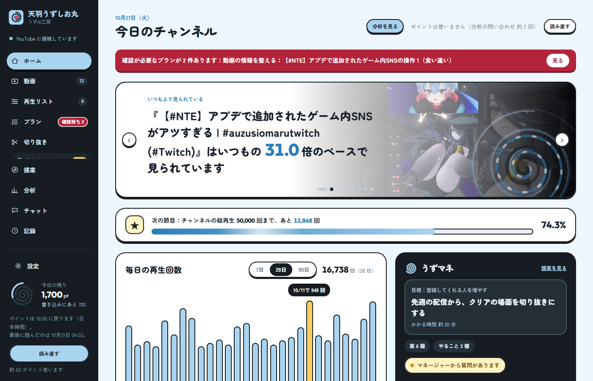
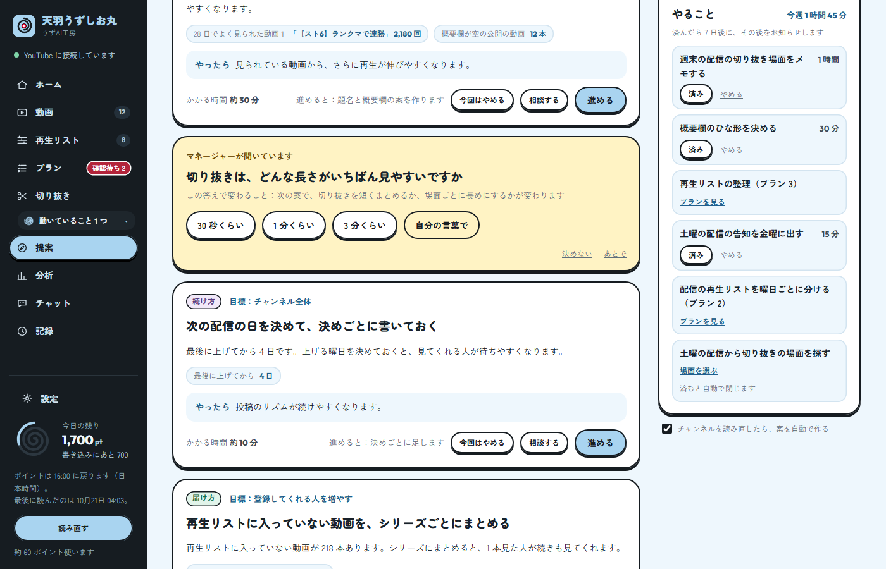
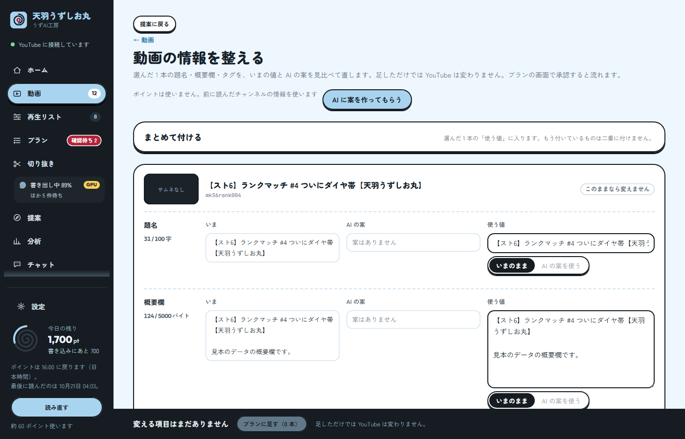
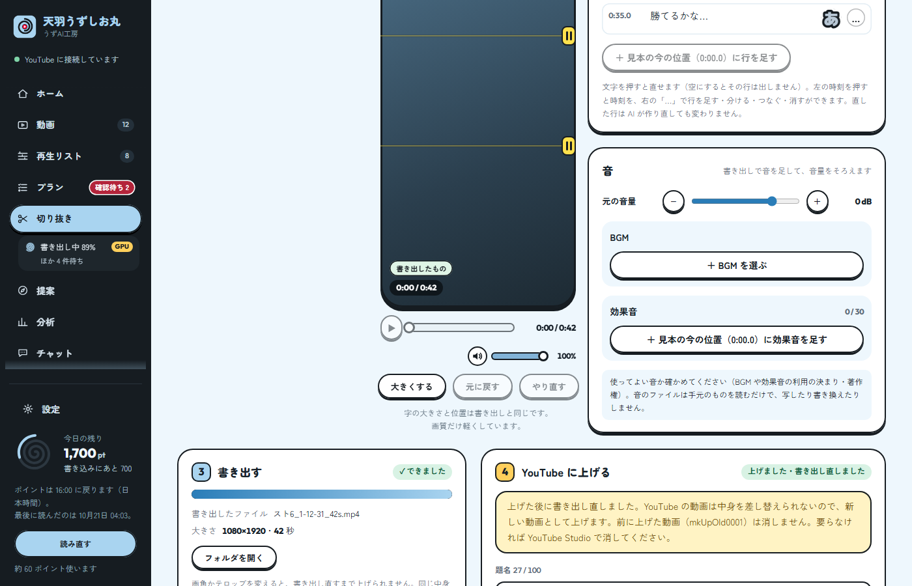
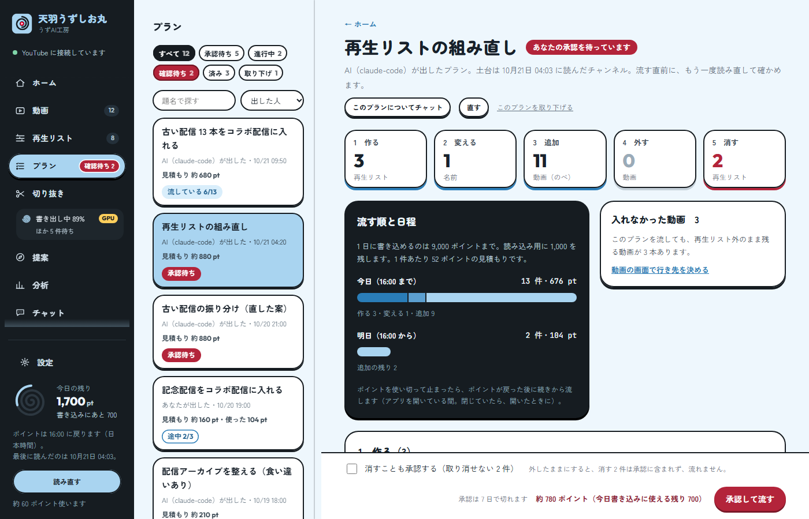

YouTube チャンネルの、
あなた専属の
マネージャー。
うずAI工房は、YouTube チャンネルを運営する人のための Windows アプリです。チャンネルの今を読み、目標に向けた次の一歩を提案し、あなたが決めたことを実行して、全部を記録します。

チャンネルの仕事を、
まるごと手伝います。
マネージャーが、次の一歩を持ってくる
チャンネルの数字を読んで、目標に効くことを 3 つ以上持ってきます。方針を先に決めなくても使えます。
- 質問は選ぶだけ
- 答えるほど提案が合う
- かかる時間も出る

題名・概要欄・タグを、AI と整える
動画を選ぶと、AI が案を作ります。いまの値と見比べて直してから、確かめてから YouTube に書き込みます。
- いまの値と並べて見比べ
- 足しただけでは変わらない

配信のアーカイブから、切り抜きを作る
録画を読んで、盛り上がりと文字起こしから場面の候補を出します。縦の動画にテロップを付けて書き出し、そのまま YouTube に上げられます。
- 縦 1080×1920
- テロップ・BGM・効果音
- 元の録画は書き換えない

再生リストを、安全に整える
変える前に差分を見せます。作る・変える・追加・外す・消すを分けて数え、あなたが承認したものだけを流します。消す操作は別に確かめます。
- 差分を先に見せる
- 消すのは別の確認
- 途中で止まっても続きから

決めるのは、いつもあなた。
承認できるのは人だけ
YouTube に書き込むのは、あなたが画面で承認したものだけです。AI は提案と下ごしらえまでで、承認はできません。
何をしたか、全部残る
いつ・誰が（あなたか AI か）・何を変えたかを記録します。
データは、あなたの PC に
チャンネルのデータや録画を、私たちのサーバーに送ることはありません。AI の機能を使ったときは、あなたが選んだ AI の提供元（Anthropic または OpenAI）に、その作業に要る情報が送られます。くわしくはプライバシーポリシーをご覧ください。私たちはサーバーを持っていません。
さっそく、
入れてみる。
体験版をダウンロード版 0.3.1（2026-11-12）・Windows 10 以降
いまは体験版です。正式版（1.0.0 以降）は BOOTH で販売する予定です。
体験版のダウンロードは、正式版の公開後に、予告なく終了することがあります。また、体験版は YouTube への接続が使えなくなることがあります。
- 動く条件Windows 10 以降（64 ビット）
- 文字起こしNVIDIA のグラフィックボードがあると速くなります（無くても動きます）
- AI の機能Claude Code または Codex を、あなたの契約でパソコンに入れておく必要があります
- 初めて使うとき文字起こしの部品（数 GB）と動画の道具（約 110MB）をインターネットから取ってきます
入れるときに青い画面が出たら
インストーラーを開くと、Windows が「Windows によって PC が保護されました」という青い画面を出すことがあります。作ったばかりで、まだ多くの人に使われていないアプリに出る確認です。次の 2 つで進めます。
文の下の［詳細情報］を押します。
発行元：不明な発行元 実行実行しない
出てきた［実行］を押します。